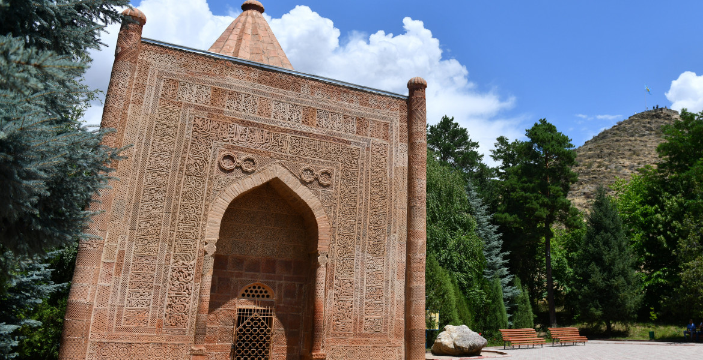
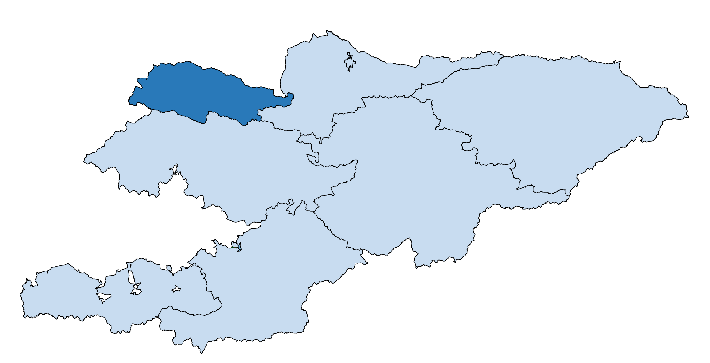

ТАЛАС

Таласская область находится в северо-западной части республики и
граничит на северо-западе с Республикой Казахстан, на востоке – с
Чуйской областью, на юге – с Джалал-Абадской областью.
Общая площадь области составляет 11,4 тыс. кв.
км, или около 6 процентов территории Кыргызской Республики. Областной центр – г.Талас.
В состав Таласской области входят 4 района, один город областного значения – г.Талас и 37 айылных аймаков.

Аксыйский район – г. Кербен (центр района)
Бакай-Атинский район – с. Бакай-Ата (центр района)
Кара-Бууринский район – с. Кызыл-Адыр (центр района)
Манасский район – с. Покровка (центр района)
Таласский район – с. Манас (центр района)